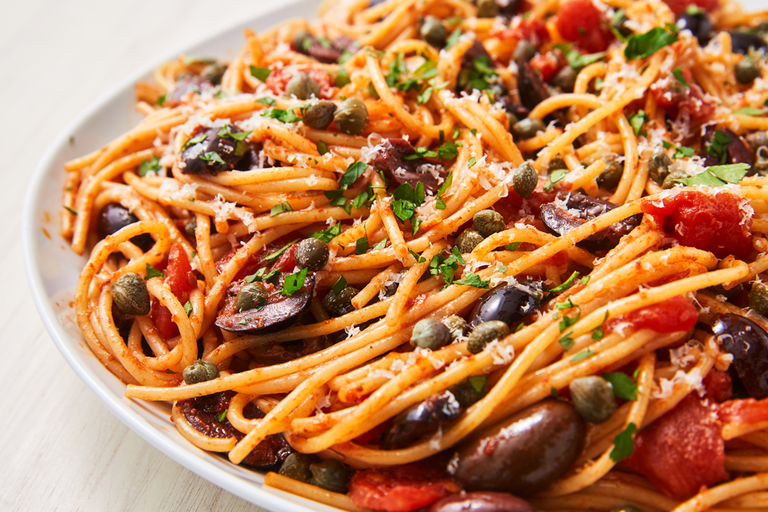

Spaghetti alla puttanesca
Pasta Dish

Spaghetti alla Puttanesca is a traditional Italian pasta from Naples thats
quick to put together from pantry staples. If you have canned tomatoes,
garlic, olives, anchovies and capers in your cupboard, you can knock out
this simple but flavourful sauce in a flash. Its a stellar emergency meal
everyone should know, with a saucy backstory of its own!
Ingredients:
- 200g / 7oz spaghetti
- 2 tbsp extra virgin olive oil
- 2 garlic cloves
- 3 anchovy fillets
- 1/4 cup pitted black olives
- 1 tbsp capers
- 1/4 tsp chilli flakes
- 400g / 14oz can crushed tomato
- 1/2 cup water
- 1 tsp fresh oregano
- 1/8 tsp kosher / cooking salt
- 1/8 tsp black pepper
- 1/4 tsp sugar
- 2 tbsp fresh basil
INSTRUCTIONS:
- Prepare: Bring a large pot of water to the boil, ready for the pasta.
Warm serving bowls (I microwave 1 minute).
- Cook garlic: Heat olive oil in a medium skillet over medium high heat.
Add garlic and cook for 15 seconds until it starts turning golden.
- Cook anchovies: Add anchovies, capers, olives and chilli flakes.
Cook for 1 minute.
- Tomato: Add tomato, then add the 1/2 cup of water into the can. Swirl
around to rinse then pour into the skillet.
- Simmer: Add oregano, salt and pepper. Stir, bring to simmer, then turn
down to low and cook over medium heat for 10 minutes or until the tomato
has broken down and created a sauce. Turn off stove when ready if not timed
with cooked pasta.
- Cook pasta: Meanwhile, add 2 teaspoons salt into the pot of water. Then
add pasta and cook per packet directions.
- Reserve pasta water (Note 5): Just before draining, scoop out a mugful
of pasta cooking water and set aside. Then drain pasta in a colander.
- Toss pasta: Immediately add pasta into sauce. Add 1/4 cup of pasta cooking
water reserved from previous step (Note 5) then use 2 wooden spoons to toss
the pasta, still on a low stove, for 1 minute or until the sauce is no longer
in the skillet but rather clinging to the pasta strands (but still slick and
slippery). If the pasta gets too dry, add more pasta cooking water and toss.
- Serve: Immediately transfer into warmed bowls. Drizzle with olive oil,
sprinkle with basil. Serve immediately!
ENJOY!